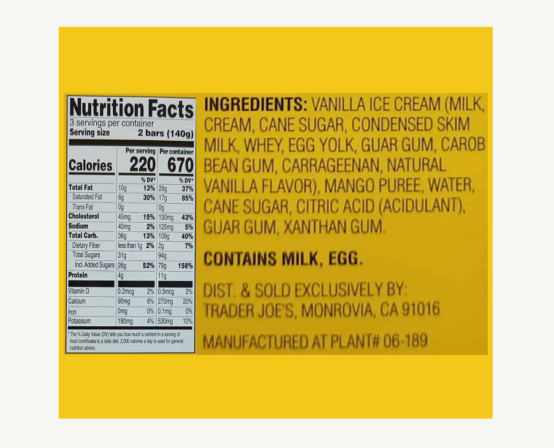
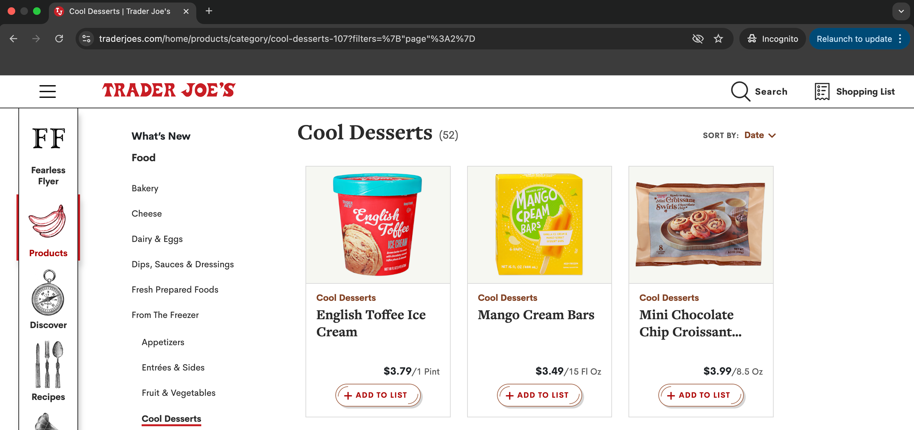
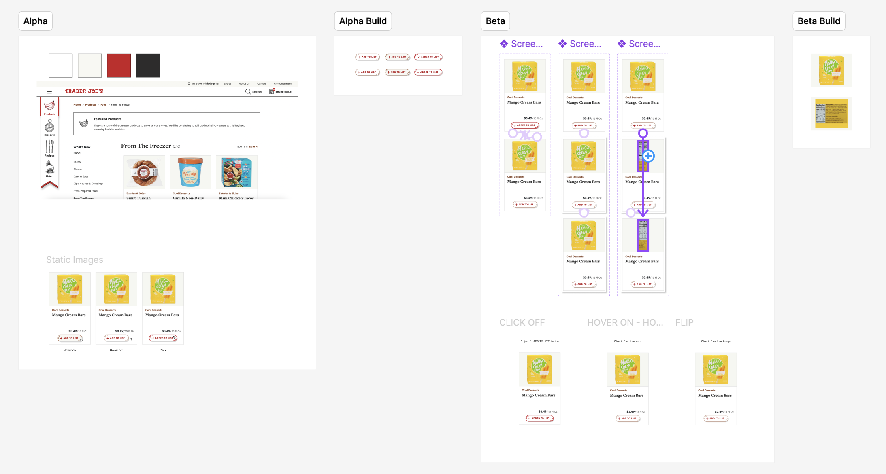

Cool Desserts
Link copied!
Mango Cream Bars
$3.49/15 Fl Oz

Cool Desserts
$3.49/15 Fl Oz
Over ten weeks, I designed and built an HTML-based web page showcasing five microinteractions that I created to improve elements of the Trader Joe’s website. As a frequent Trader Joe’s shopper, I chose this project to connect my personal interests with my coursework. I focused on enhancing five objects, the “ADD TO LIST” button, the item card, the item image, a new like button, and a new copy link button, each with detailed descriptions of their Triggers, Rules, Feedback, Loops, and Modes.
Throughout the timeline, I progressed from initial brainstorming and coding to expanding the project with new objects and interactions, ultimately delivering a fully built and documented page. The problems I addressed included missing interaction states, limited visual feedback, and lack of useful features like removing items from lists, viewing nutrition info, liking items, or sharing item links. My solutions added usability, clarity, and convenience.
Using a process of designing in Figma, prototyping, and coding, and later relying on past designs to code more directly, I arrived at a final product that is functional, organized, and improves upon the existing Trader Joe’s website. The project achieved its goal of creating efficient, engaging microinteractions across five objects.
Over the past ten weeks, I was tasked with designing and building an HTML based web page that describes the details of my microinteraction additions and improvements to the website of my choice. This was a solo project, and so I chose to work on an item card for the Trader Joe’s website. I made this decision as a frequent Trader Joe’s shopper who enjoys the Trader Joe’s brand identity. This decision was a fun way of incorporating my interests and every-day life into my project.
I had about ten weeks to finalize an HTML based web page with five microinteractions as well as their corresponding descriptions formatted under the following headings; Triggers, Rules, Feedback, Loops, and Modes.

In week one, I began brainstorming and designing my initial ideas for my website of choice, Trader Joe’s, and my initial object to focus my microinteractions on, the “ADD TO LIST” button. By week two, I had the initial design completely coded. By week six, I designed two more objects and their microinteractions, ultimately building a total of 3 objects and their microinteractions. These objects were the button from week one and two, as well as the item card and item image. By week nine, I had a total of five objects and their microinteractions completely built and completed. Throughout each of these weeks, I also included a description of the objects’ Triggers, Rules, Feedback, Loops, and Modes.
The objects on the Trader Joe’s website that I chose to focus on were objects that had room for improvement. The “ADD TO LIST” button had a problem that I believed needed fixing. Users had the ability to hover on, hover off, and click. However, once clicked and added to the user’s list, there was no way to click off or remove the item from the user’s list. This is an issue because a user should be able to change their minds if they no longer want a certain item on their shopping list. So, I added a click off state.
The next two objects that I improved are the item card and the item image. In the existing website, the item card sits flat on the page with other item cards. I added a hover on and hover off microinteraction to visually separate the item a user is interested in. I also made it so that clicking on the item card navigates the user to the full item card page. The existing item image on the current site is static. I added a hover on and off state to it. When hovering on, it flips to the nutrition facts. Hover off flips back to the item image.
In the last iteration, I added two objects, a like button and a copy link button. With this, I gave users the ability to have a like items database in addition to an add to list database. This way, they can store all of their liked items and choose which ones of the favorites to buy on their next shopping trip. The copy link button adds an easy, user friendly way to share items with friends and family. Neither of these features exist in the current website, and I think they would be nice ones to have.

This project is successful if I successfully built a series of microinteractions to five objects on the Trade Joe’s website. These microinteractions should add efficiency, better usability, and a touch of fun to the existing site. I believe that I achieved this and have therefore been successful in completing this project.
At the beginning of the project, I started designing initially with Figma. Once I was happy with my design, I prototyped it to look like the built and coded version that I intended to have. Only then did I actually code and build it. In adding the next two objects and their microinteractions, I went through the exact same process; design with Figma, prototype with Figma, code. However, in adding the last two objects and finalizing my project, I went straight to coding. Since I had a mental model of what I wanted, and since I already had base designs from past weeks, I was able to code it right away with no Figma designing or prototyping necessary.

My final product consisted of a coded HTML based web page with a title at the top, my final microinteractions code, and their detailed descriptions.
Link to final web page: https://idm241-mdc389.netlify.app/final/build/
In conclusion, my final project delivered on everything I intended it to deliver upon. The web page is organized neatly and intuitively, the final code has five objects with their microinteractions and descriptions, and the microinteractions improve the existing site.